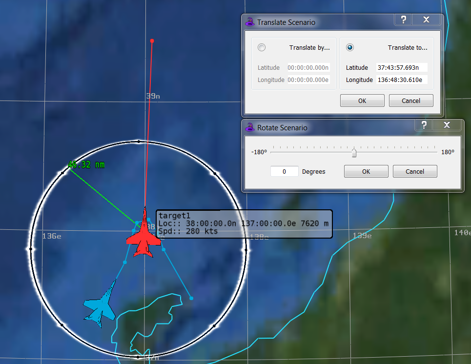

Wizard v2.1.0 - 4 March 2017¶
New Features¶
Laydown Editor
Player Move Rework
Translate/Rotate Scenario
Hover Overlays
Range Rings
Icon Scale Controls
View Projection
Screenshot System
Measure Tool Update
Zone Rework
Results Visualization
2D Plotting
Sensor Volumes with shaped FOV and max range
Interaction Lines: detect, track, local-track, fire, communication, tasking, and cyber
WSFDraw
Trace-lines
Vectors: sun, moon, Earth, velocity, and platforms
Notes¶
The former Results Plugin has been removed and replaced with Results Visualization
Bugs¶
(Issue #80) (MANTIS #147) Fixed issue with Wizard not finding all included scenario files. (Related to MANTIS #76)
(Issue #81) (MANTIS #172) Fixed issue with signal_processor block causing Wizard to crash. The grammar was causing a recurrence problem and Wizard was eventually running out of memory and crashing.
(Issue #101) Fixed issue with parsing of SAM and A2A Launch Computers. Changed the grammar to ignore table content for these launch computer types since the parsing of large tables caused Wizard to run out of memory and crash. Added checks in Wizard code to detect a failure to allocate memory in order to write out a message and gracefully shut down Wizard. Added the total memory usage to the status bar. Added a performance tool to display current parse tree and proxy layer memory usage.
(Issue #110) (MANTIS #132) Fixed a couple of issues with Multi-Run feature. First, the “Summarize CSV Files” check box in the Settings dialog was not working correctly. Second, the Multi-Run feature had hard-coded names for the DOE executables. Wizard will now be able to handle several variants of the DOE executable names, for example, “doe_start.exe”, “doe_start_win_x.exe”, etc. A message box will now pop-up if there are problems with finding the DOE executables.
(Issue #117) Fixed issue with Wizard crashing when a large file is open in a text editor tab and the file gets modified outside of Wizard.
(Issue #134) Fixed issue with the Ctrl+C (Copy) and Ctrl+A (Select All) key combinations not working in the output panel.
(Issue #135) (MANTIS #151) Fixed issue with shifted text in a new file created via the Project Browser.
Fixed a memory leak when the Wizard reparses a scenario. For large scenarios, this leak would quickly run the Wizard out of memory causing a crash.
(MANTIS #223) Fixed issue with Wizard crashing on shutdown after loading plugins with duplicate names.
(MANTIS #226) Fixed issue with Wizard crashing when unloading the Type Browser plug-in and then opening a project.
(MANTIS #232) Fixed issue with Wizard crashing when the shortcut ‘Ctrl+K+U’ is used to uncomment the last line in a file.
Fixed issue where autocomplete was not correctly placing new line characters
New Feature Screen-shots¶
New Laydown Editor Features |
|---|
|  |
Results Visualization Features |
|---|

|